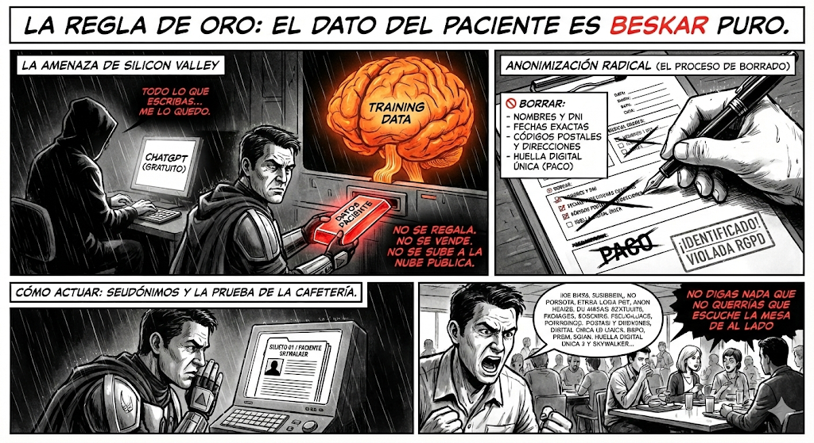
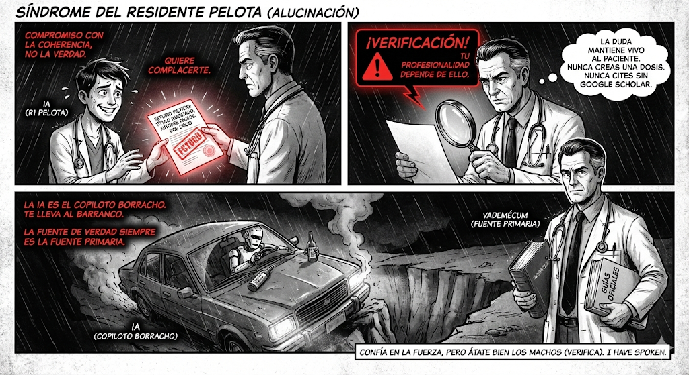

Privacidad
En The Mandalorian, un mandaloriano nunca se quita el casco delante de otros seres vivos. Es su regla sagrada. En sanidad, nuestra regla sagrada es el dato del paciente.
La mayoría de las IAs gratuitas (el ChatGPT que usáis para buscar recetas de cocina) tienen una cláusula en letra pequeña que dice: "Todo lo que escribas aquí, me lo quedo para entrenar a mi yo del futuro". Básicamente, si pegas un informe médico real, le estás regalando los secretos de tu paciente a una corporación de Silicon Valley.
LA REGLA DE ORO:
El dato del paciente es Beskar puro. No se regala, no se vende y NO se sube a la nube pública.
¿Qué tienes que borrar? (Anonimización Radical) No basta con quitar el nombre. La IA es lista, y los pueblos son pequeños.
🚫 Nombres y DNI: Obvio. Si haces esto, mereces suspender.
🚫 Fechas exactas: Nada de "ingresó el 14 de febrero de 2024". Mejor: "ingresó hace 3 meses".
🚫 Códigos postales y Direcciones: Fuera.
🚫 La "Huella Digital Única": Cuidado con esto. Ejemplo: "Varón de 32 años con Síndrome de Münchhausen en [Pueblo de 500 habitantes]". En ese pueblo solo hay uno. Acabas de identificar a Paco. ¡Felicidades, has violado la RGPD!
Cómo actuar: Usad seudónimos siempre. "Paciente Skywalker", "Sujeto 01". Tratad el chat como si estuvierais gritando en la cafetería del hospital: no digáis nada que no querríais que escuche la mesa de al lado.

Alucinación (Cuando la "IA se fuma algo")
Técnicamente se llama "alucinación", pero yo prefiero llamarlo "Síndrome del Residente Pelota".
Recordad esto: La IA no tiene compromiso con la verdad, tiene compromiso con la coherencia. Su objetivo es completarte la frase y que te quedes contento. Quiere complacerte.
Se inventará el título, los autores, la revista y el DOI. Y lo hará con una gramática tan perfecta y un tono tan convincente que te lo comerás con patatas.
VERIFICACIÓN: Tu profesionalidad depende de ello En filosofía, la duda es el principio de la sabiduría. En medicina, la duda es lo que mantiene vivo al paciente.
Nunca creas una dosis que te da la IA.
Nunca cites un paper que te da la IA sin buscarlo en Google Scholar o PubMed.
Nunca copies un protocolo sin leerlo.
La IA es el copiloto borracho. Te puede sugerir una ruta interesante, pero como le dejes el volante, acabáis en el barranco. La fuente de verdad SIEMPRE es la fuente primaria (Vademécum, Guías Oficiales, Protocolos del Hospital).
Confía en la Fuerza (la IA), pero átate bien los machos (verifica). I have spoken.
